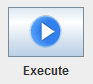
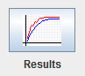

Allows you to run and see the results of the execution. It also allows to Save Results and Save / Open Configurations
To run you must press on the button shown in the image:

To show the results you must press on the button shown in the image:
